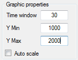

When CAN frames received contains data that can be decoded using the loaded CAN configuration, values of CAN signals received can be traced in real time into a graphic.

The graphic shows CAN parameters values as a function of the time. By default, the graphic is empty, simply select data to trace by checking channels in the channels list.

Using the small tool bar on the top of the channel list, it is possible to stop or freeze the graphic.

Button  stops the real time graphic plotting. Once clicked this button becomes ‘Start plot’ button
stops the real time graphic plotting. Once clicked this button becomes ‘Start plot’ button  Those two commands actually reset the graphic window so all data plotted will be lost after a ‘Stop/Start’ commands.
Those two commands actually reset the graphic window so all data plotted will be lost after a ‘Stop/Start’ commands.
Button  freezes the real time graphic plotting. Once clicked this button becomes ‘Resume’ button
freezes the real time graphic plotting. Once clicked this button becomes ‘Resume’ button  Unlike the ‘Stop’ button, ‘Freeze’ command doesn’t reset the graphic. On graphic resuming, graph will appear as if it never stopped before.
Unlike the ‘Stop’ button, ‘Freeze’ command doesn’t reset the graphic. On graphic resuming, graph will appear as if it never stopped before.
Graphic time window and Y axis scale can be changed through the ‘Graphic properties’ panel.

Field ‘Time window’ define the time span between the beginning and the end of graphic.
If check box ‘Auto scale’ is ticked, all values of all plotted signal are shown in the graphic. Uncheck that box to define the scale of the Y axis. After having typed a value into the ‘Y min’ or ‘Y max’ fields; press ‘Enter’ to update the graphic.

Created with the Personal Edition of HelpNDoc: Easily create Web Help sites